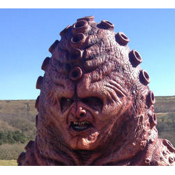

| Home | The Doctors | The Villains | |
| banner | |||
|
The Zygons are a fictional extraterrestrial race in the long-running British science fiction television programme Doctor Who. The Zygons have shape-shifting abilities, allowing them to replicate the appearance of another being, but they must keep the subject alive in order to use its body print. This skill was vital in their concealment and in their scheme to seize power despite their small numbers along with their organic space craft. The Zygons first appeared in the 1975 serial Terror of the Zygons, where they planned to conquer Earth after the Zygon homeworld was destroyed in a stellar explosion. One such craft, whose occupants are led by warlord Broton, crash landed into Loch Ness. The Zygons intended to use a Skarasen, a creature whose lactic fluid they feed on and was called the Loch Ness Monster by the general public, to attack an energy conference in London as part of a bid to conquer Earth for colonization by a refugee fleet. The plan was foiled with Broton and his crew killed as a result of the intervention of the Fourth Doctor and the United Nations Intelligence Taskforce (UNIT) while the Skarasen retreats to Loch Ness. |